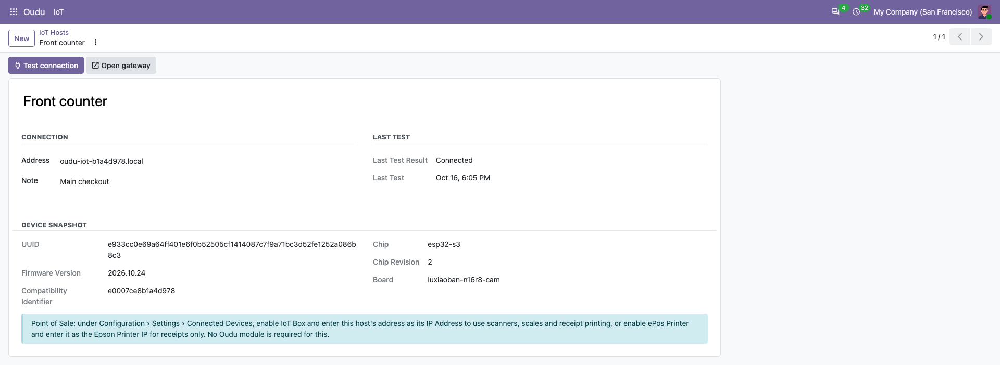
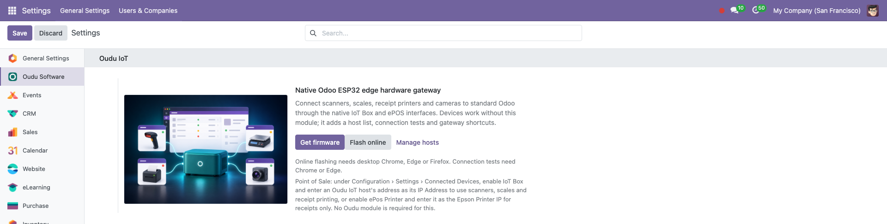
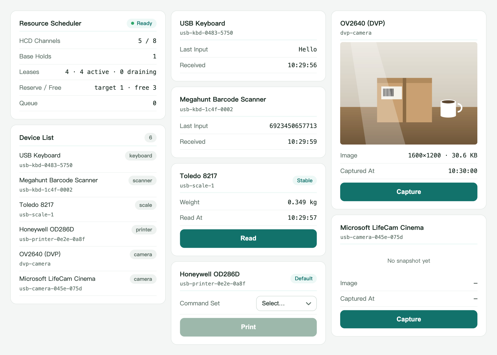
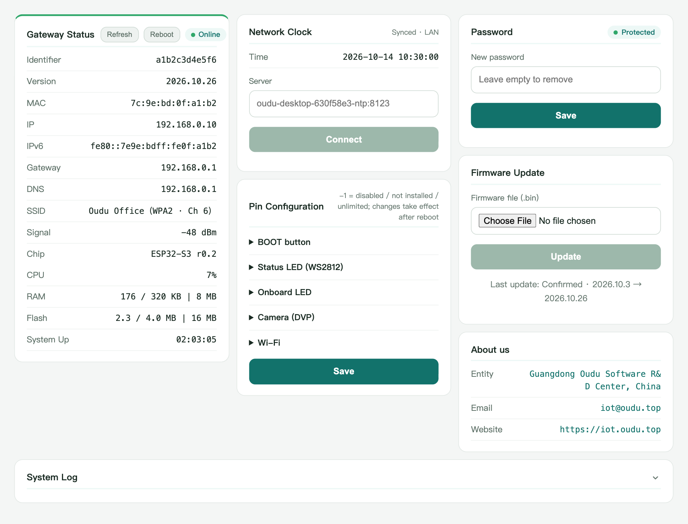
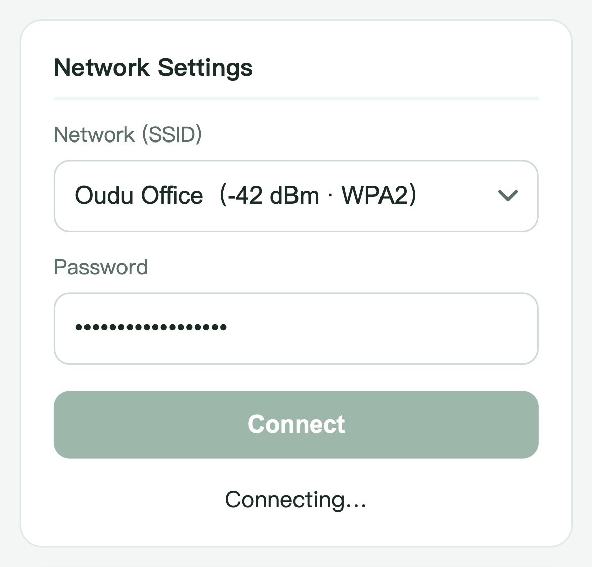

Oudu IoT is a native Odoo ESP32 edge hardware gateway. It connects scanners, scales, receipt printers and cameras to Odoo through the native IoT Box and ePOS interfaces.
The devices work with standard Odoo without any Oudu module. This module is an optional companion for administrators: keep your hosts in one list, test them from the browser and open their gateway pages.

Keep the Oudu IoT hosts on your local network in one list under Oudu > IoT > Hosts, visible to administrators only. Each row is colored by its last test result.
Once a host is saved with its address, check it from your own browser and record its identity, firmware version, chip and board. Connection tests need Google Chrome or Microsoft Edge.
After a successful test, open the host's own gateway page (its root address) in one click. Changing the address clears the result until the host is tested again.
Each host shows where to enter its address in Point of Sale: Configuration › Settings › Connected Devices, as the IoT Box IP Address, or as the ePos Printer Epson Printer IP for receipts only.

Flash an ESP32 board online at iot.oudu.top/flash/ using desktop Chrome, Edge or Firefox, or download the firmware from iot.oudu.top, then join it to your Wi-Fi from its setup page.
In Oudu > IoT > Hosts, enter the host's .local name or private IP address, save, and run Test connection in Chrome or Edge.
Enter the same address under Connected Devices. Your scanners, scales and receipt printers then work through Odoo's own interfaces.
These features belong to the device itself and need no setting in this module. They are served by the host's own pages on your local network.
Barcode scanners, scales, receipt printers and cameras connect through the interfaces Odoo already speaks, so Point of Sale and other Odoo apps use them natively.

Open gateway takes you to the page served by the device, with its status, network clock, pin configuration, password and firmware update.

After flashing, choose the Wi-Fi network and enter its password on the host's setup page. The host then joins your local network and can be added to Odoo by its address.

Supports Community and Enterprise editions on self-hosted and Odoo.sh deployments for the Odoo series declared by this listing. This module does not depend on, reuse or replace any Enterprise module.